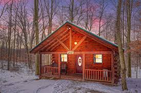
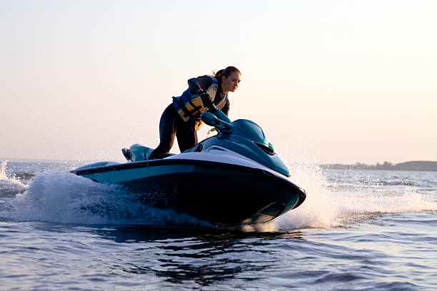

Amanda State Park
Where Luxury and Rustic Come Together


Located in Amanda, Ohio, Amanda State Park offers a little something for everyone. During the day, enjoy hiking on our beutiful trails or swimming, boating, in our crystal clear lake. Snowmobiling and sledding available in the winter months. in the evening enjoy music and dancing in our main lodge Childeren's Center
Luxury Accomodations
- One, two, and three bedroom cabins available
- Full Kitchens
- Gas Fireplaces, A/C
- TV, DVD player, and private decks with outdoor hot tub
- continental breakfast delivered to your front door (upon request)
Rustic Accomodations:
- Tent and RV sites available
- Electricity available at select sites
- Bath house with hot running water